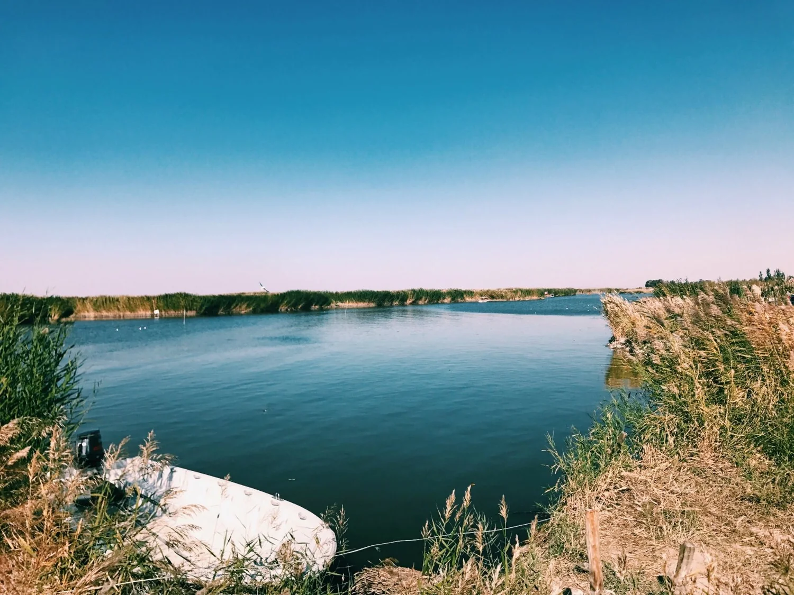

CITY 07 / 12 · HULUNBUIR
呼伦贝尔呼伦贝尔市 · 北国碧玉
草原、森林、湿地与界河在同一个名字里相遇，呼伦贝尔把北方的辽阔写到了极致。
25.3 万 km²面积
约 219 万常住人口
24 处必游点位
3 项非遗项目
北国碧玉
CITY PORTRAIT
呼伦贝尔位于内蒙古东北部，名字来自呼伦湖与贝尔湖。它是中国面积最大的地级市之一，拥有草原、森林、湿地、湖泊与中俄边境线。
这里既有莫尔格勒河“天下第一曲水”的柔美，也有大兴安岭与敖鲁古雅驯鹿部落的冷峻。旅行呼伦贝尔，真正的主角往往不是某个景点，而是路上不断展开的地平线。
中国最美草原使鹿部落中俄边境
MUST SEE
必游景点
24 处点位，覆盖呼伦贝尔最值得走进去的自然与人文现场。点击任意一张卡片，展开完整讲解与研学提示。
LIVING HERITAGE
非遗图谱
从音乐、舞蹈到技艺与民俗。这里的每一项都不是“表演给游客看”的节目，而是仍在被传承的生活。
TASTE OF PLACE
在地风物
一座城的味道，往往比景点更接近日常。以下四样，是呼伦贝尔餐桌上最常见的坐标。
手把肉
草原羊肉，清煮蘸盐
俄式列巴
边境风味，麦香扎实
蓝莓
大兴安岭野生浆果
奶豆腐
奶香浓郁，耐嚼回甘
ONE DAY ROUTE
五日呼伦贝尔 · 草原到森林
把上面的点位按时间排成一条线。不必严格照表，按你的节奏删减一站，也是一种走法。
D1 09:00
莫尔格勒河
从海拉尔出发，登高看曲水，宿草原蒙古包。
D2 10:00
额尔古纳湿地
看河流湿地与曲流，下午前往恩和或室韦。
D3 09:00
满洲里
沿边境公路到满洲里，看国门与套娃广场夜景。
D4—D5
敖鲁古雅
北上根河，探访使鹿部落与大兴安岭白桦林。
路线提示 · 呼伦贝尔幅员辽阔，景点之间动辄数百公里，包车或自驾是首选；草原天气多变，防晒、防雨与保暖要同时准备。
